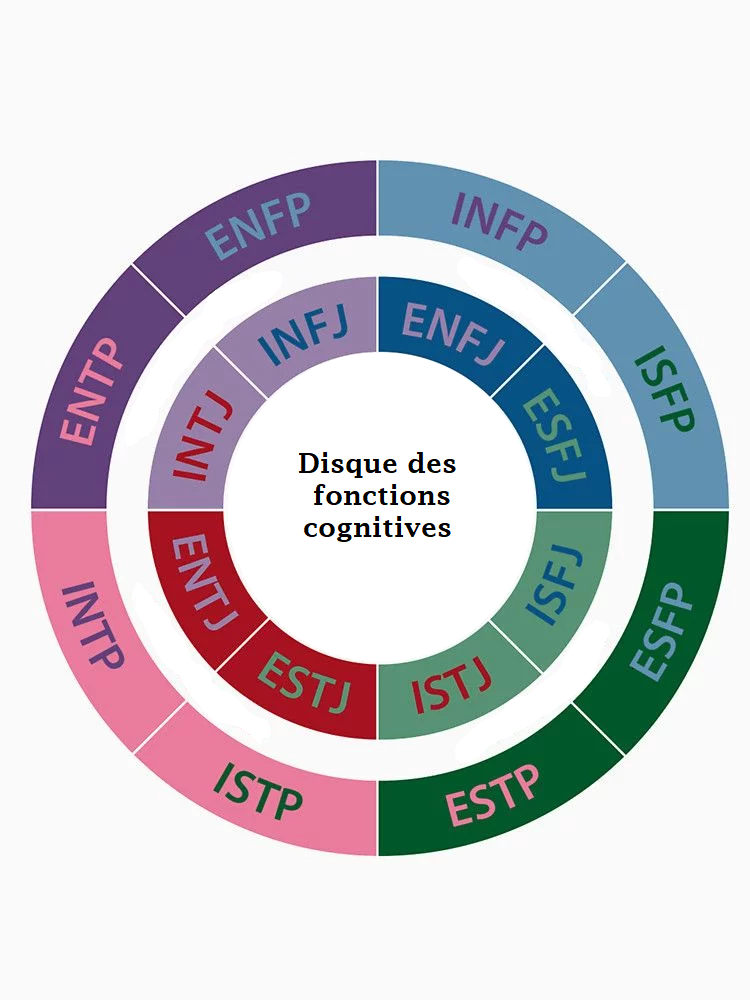

Les fonctions cognitives du MBTI
Cet article décrit les huit fonctions cognitives du modèle du MBTI inspiré par les travaux de Carl Jung: sensation introvertie(Si), sensation extravertie(Se), intuition introvertie(Ni), intuition extravertie(Ne), sentiment introverti(Fi), sentiment extraverti(Fe), pensée introvertie(Ti), et pensée extravertie(Te). Il est à noter que chaque type de personnalité en utilise quatre, et que chaque fonction est soit dominante, auxiliaire, tertiaire ou inférieure. La fonction dominante apparaît dès l'enfance, tandis que la fonction auxiliaire se développe pendant l'adolescence. Ce sont les deux fonctions avec lesquelles vous êtes les plus familières. Les fonctions tertiaires et inférieures sont quand à elles les fonctions les plus difficile à maîtriser, mais elles s'équilibrent vers la vingtaine ou la trentaine pour la fonction tertiaire et vers la quarantaine pour la fonction inférieure.

Dans cette image, chaque couleur de remplissage d'une case représente la fonction dominante de la personnalité, et la couleur de remplissage des lettres sa fonction auxiliaire.
Les fonctions cognitives ont un ordre bien précis. En effet, les fonctions cognitives reposent sur deux axes au extrémités opposées: l'axe dominante-inférieure et auxiliaire tertiaire. Ainsi, la fonction inférieure est opposée à la fonction dominante, tout commme la fonction tertiaire est opposée à l'auxiliaire. Donc les différents axes possibles sont Si-Ne, Se-Ni, Fe-Ti, Fi-Te, et inversement. Ensuite, deux fonctions de même orientation d'énergie ne peuvent être côte à côte, c'est-à-dire que si votre fonction dominante est introvertie alors votre auxiliaire est forcément extravertie, puis votre tertiaire introvertie et votre inférieure extravertie puisqu'elle est l'opposée de la dominante.